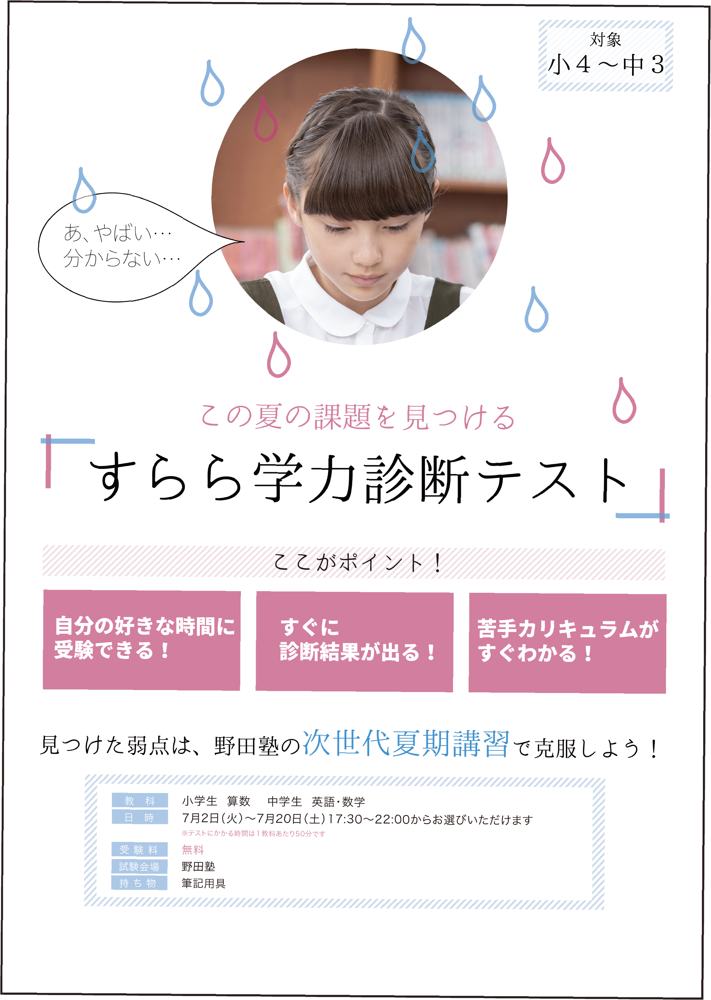
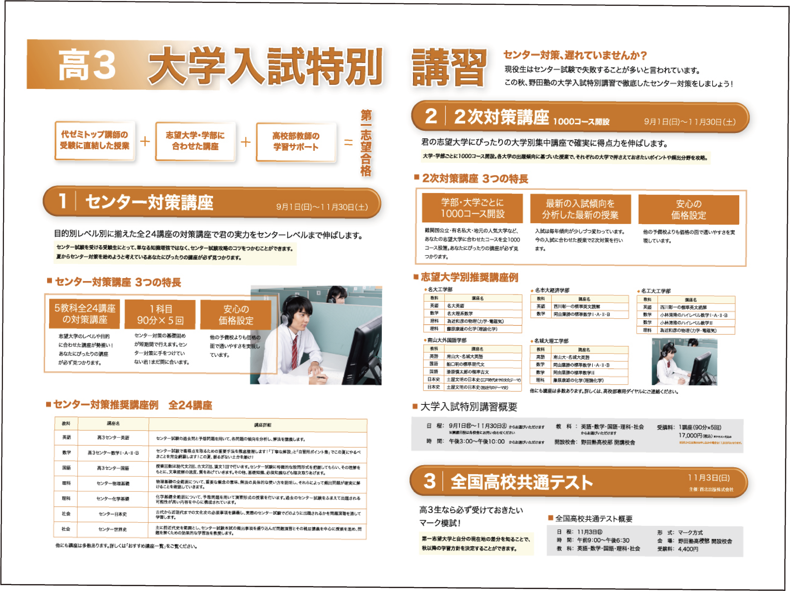

ポスター
2017.07-
担当：デザイン
技術：Illustrator/Photoshop
アルバイトで作成した
ポスター・ダイレクトメールの一部です。


梅雨をコンセプトにデザインした夏期講習のポスターです。
掲示される時期が梅雨だったので「雨」と、 テストがわからずに焦っていること(汗)をイメージしてデザインを行いました。
しかし、あまり暗い印象にならないようにストライプを用いて軽いイメージにしたり
明るくポップな色使いにするなどの工夫を行いました。
小学生向けの講座のポスターです。
小学生対象だったので、読みやすく楽しく読書をしながら力が身につくということを表現しました。

塾生や元塾生に送付する秋期講習についてのダイレクトメールのデザインです。
高校3年生対象でセンター試験も近づいてくるということなので真面目な印象のデザインを目指し、
講座について詳しく説明しました。